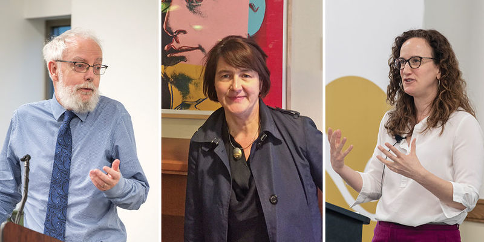

People
Our people bring a world of perspectives to a shared purpose: advancing human dignity through research, education, and engagement.

Directory
Meet the faculty, staff, scholars, and students who make up our institute community.
-

Director; Professor of Global Affairs
-
Chair, Advisory Council
-
Associate Professor of Anthropology and Peace Studies
-
Professor of Theology and Peace Studies
-
Assistant Professor of Sociology
-
Academic Program Manager
-
Senior Administrative Coordinator
-
Communications Specialist
-
Postdoctoral Research Associate
-
Visiting Research Fellow
-
Ph.D. Student, Peace Studies and Sociology
-
Master of Global Affairs Student
-
Undergraduate Student, Political Science and Peace Studies